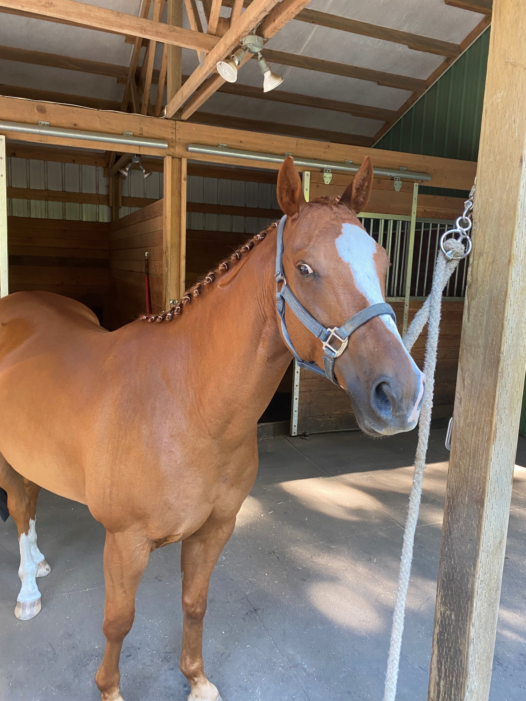

I am very passionate about horseback riding. I started horseback riding because my grandfather was super into horses. He had over 25 horses and he did a sport called cutting. I bought my own horse in 2019 and I use him for trail riding in Tolt McDonald park (it is 1 minute walking from my house). My horse is named Pickles and he is a Quarter Horse. I also lease a show jumping horse named Armani. He is a Thoroughbred. During the summer, I fly by myself to Dallas, Texas to ride and show cutting horses in Texas and Oklahoma. I stay by myself in my trainor's house for 4-8 weeks during the summer. I work in the barn, in the house, and I help to ride the horses and train the baby horses. Horseback riding is my favorite to do. It is an incredible sport and the people are fun to hangout with. My life 100% revolves around horses and I wouldn't have it any other way.
